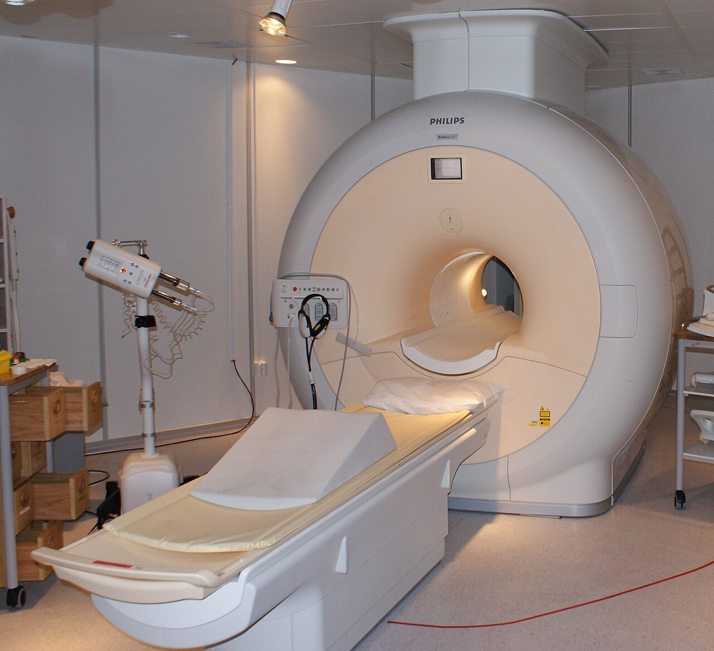
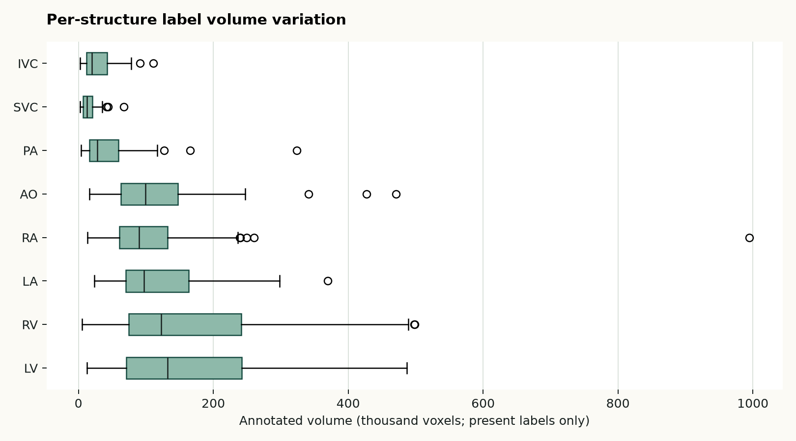
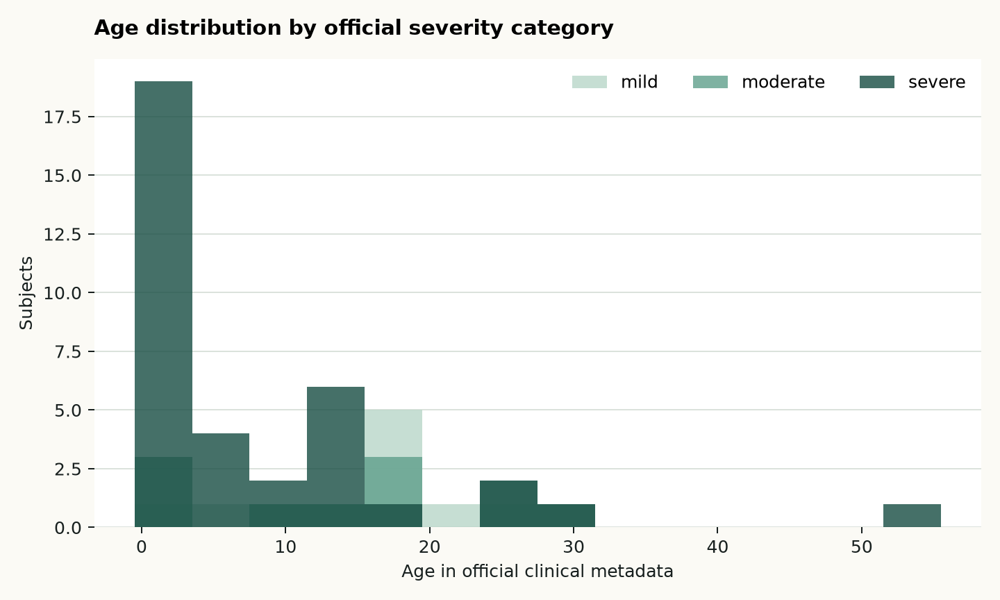
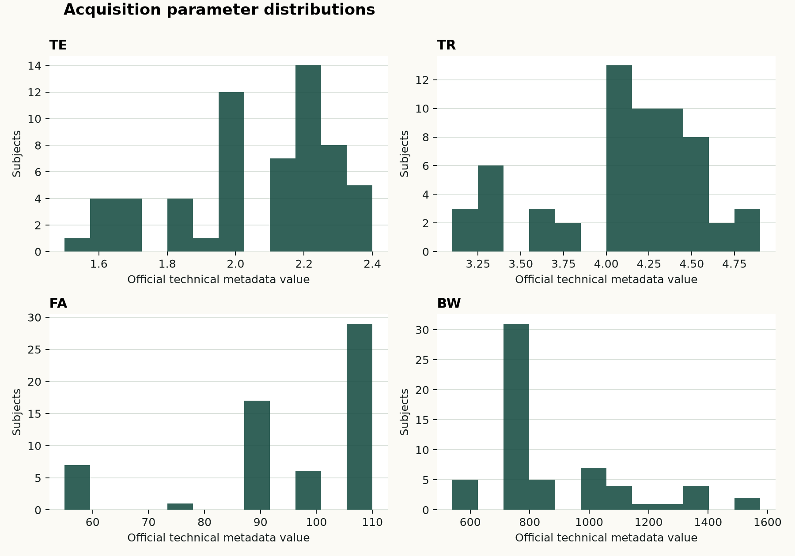
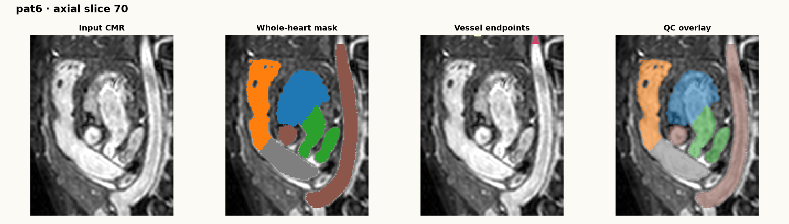
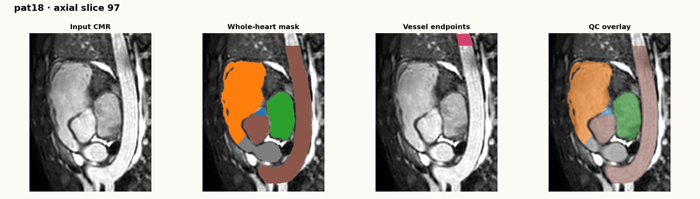
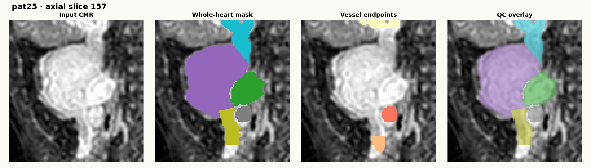
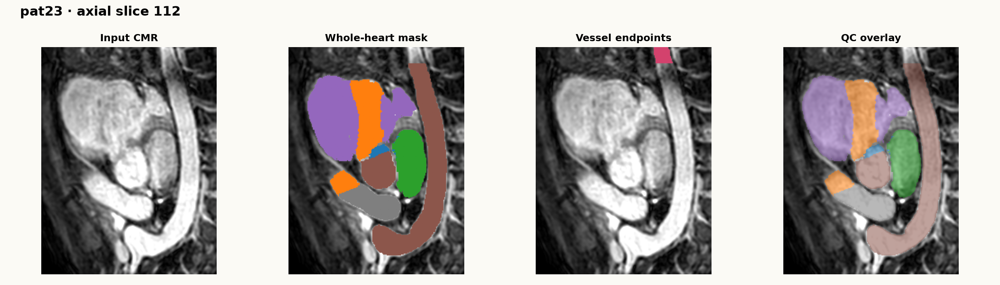
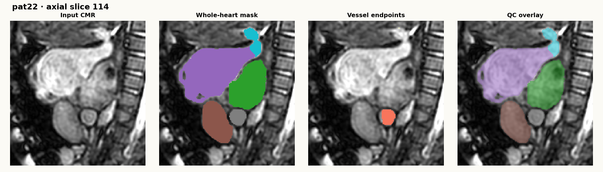
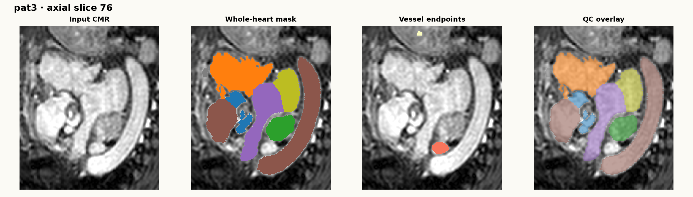

NIfTI (`.nii.gz`)
01 · Dataset overview
What this dataset enables
HVSMR-2.0은 선천성 심장질환(CHD) 환자의 3D cardiovascular MR(CMR) 60건과 수동 whole-heart segmentation을 제공하는 공개 데이터셋입니다. 4개 심장방과 4개 대혈관을 포함해, 단순한 정상/이상 분류보다 복잡한 해부학적 구조를 복원하고 정량화하는 연구에 적합합니다.
LV, RV, LA, RA, AO, PA, SVC, IVC
나이, severity, 진단·수술 정보, acquisition parameter
출처를 표기한 재사용 가능

{kind=link}
02 · Download and verification
A reproducible acquisition workflow
Select a variant
공식 `orig`, `cropped`, `cropped_norm` 중 심장 crop·intensity normalization이 적용된 `cropped_norm`을 선택했습니다. 세 변형은 절대 섞지 않습니다.
Download official files
Figshare article 25226363에서 ZIP과 clinical/technical CSV를 내려받았습니다. 원본 데이터는 Git에 저장하지 않습니다.
Verify integrity
공개된 MD5와 로컬 파일의 MD5를 대조했습니다.6027791717a1ecf51b03e0d84f1acee7
결과: 일치
Extract and pair
60 subject의 image·segmentation·endpoint mask를 포함한 361개 파일을 추출했습니다.
Audit and visualize
image/mask pairing, shape, spacing, intensity, label voxel count, metadata를 manifest로 저장하고 QC overlay를 만들었습니다.
다운로드 파일: `cropped_norm.zip` 1,214,309,305 bytes. 공식 checksum과 일치했습니다. 데이터셋의 원본·가공본은 저장소에서 제외하고, 코드와 문서만 version control 합니다.
03 · Preprocessing design
Audit before you transform
`pat#_cropped_norm.nii.gz`
심장 주변으로 crop되고 intensity normalization된 3D CMR입니다.
`pat#_cropped_seg.nii.gz`
8개 구조의 whole-heart ground truth입니다. 값 0은 background입니다.
`pat#_cropped_seg_endpoints.nii.gz`
대혈관의 optional extent를 표시해 공정한 segmentation 비교를 돕습니다.
Executed audit
- image, segmentation, endpoint mask의 subject별 pairing 검증
- 세 파일의 shape 동일성 검증
- voxel spacing·intensity percentile·foreground volume 추출
- 8개 구조별 voxel 수와 미지 라벨 검사
- clinical/technical metadata를 subject ID로 결합
- 최대 foreground axial slice 기준 QC overlay 3건 생성
Reproducible command
.venv/bin/python src/preprocess_hvsmr.py
--data-dir datasets/raw/hvsmr-2.0/cropped_norm/extracted
--output-dir datasets/processed/hvsmr-2.0/cropped_norm
--clinical-csv …/hvsmr_clinical.csv
--technical-csv …/hvsmr_technical.csvView preprocessing code ↗04 · Reproducible command log
From official archive to audited artifacts
아래는 이 프로젝트에서 실제 실행한 순서입니다. 데이터는 cropped_norm 한 변형만 사용합니다. orig 또는 cropped와 섞어 학습하면 안 됩니다.
Step 1
Download official files
mkdir -p datasets/raw/hvsmr-2.0/cropped_norm
curl --fail --location --retry 3 --continue-at - \
--output datasets/raw/hvsmr-2.0/cropped_norm/cropped_norm.zip \
https://ndownloader.figshare.com/files/44561783
curl --fail --location --retry 3 \
--output datasets/raw/hvsmr-2.0/cropped_norm/hvsmr_clinical.csv \
https://ndownloader.figshare.com/files/44566094
curl --fail --location --retry 3 \
--output datasets/raw/hvsmr-2.0/cropped_norm/hvsmr_technical.csv \
https://ndownloader.figshare.com/files/44566097공식 Figshare artifact와 clinical/technical metadata를 각각 저장합니다.
Step 2
Verify and extract
md5sum datasets/raw/hvsmr-2.0/cropped_norm/cropped_norm.zip
# expected: 6027791717a1ecf51b03e0d84f1acee7
mkdir -p datasets/raw/hvsmr-2.0/cropped_norm/extracted
unzip -q datasets/raw/hvsmr-2.0/cropped_norm/cropped_norm.zip \
-d datasets/raw/hvsmr-2.0/cropped_norm/extracted
find datasets/raw/hvsmr-2.0/cropped_norm/extracted -type f | wc -l
# observed: 361checksum 일치 후 압축을 해제합니다. 361개 파일에는 60 subject의 image·segmentation·endpoint 관련 파일이 들어 있습니다.
Step 3
Install audit environment
python -m venv .venv
.venv/bin/pip install -r requirements.txt
# requirements: nibabel, numpy, pandas, matplotlibnibabel로 NIfTI header와 data array를 읽고, pandas로 subject-level manifest를 만듭니다.
Step 4
Create manifest and QC
.venv/bin/python src/preprocess_hvsmr.py \
--data-dir datasets/raw/hvsmr-2.0/cropped_norm/extracted \
--output-dir datasets/processed/hvsmr-2.0/cropped_norm \
--clinical-csv datasets/raw/hvsmr-2.0/cropped_norm/hvsmr_clinical.csv \
--technical-csv datasets/raw/hvsmr-2.0/cropped_norm/hvsmr_technical.csv
.venv/bin/python src/visualize_hvsmr.py \
--manifest datasets/processed/hvsmr-2.0/cropped_norm/manifest.csv \
--output-dir assets/hvsmr --case-id pat0geometry는 바꾸지 않고 audit artifact만 생성합니다. 실제 resampling은 이후 학습 transform 안에서 versioning합니다.
OutputObserved resultPurpose
manifest.csv60 rows × 67 columns파일 경로, shape, spacing, intensity, 8개 label voxel 수, clinical/technical metadatasummary.csv1 dataset-level rowsubject 수, shape 범위, foreground median, 구조별 label presenceqc_overlays/*.png3 axial QC imagespairing, orientation, label loading을 빠르게 확인assets/hvsmr/*.png6+ website visuals집계 통계와 실제 처리 흐름을 연구 페이지에 표시Manifest column guide
What each column means
manifest는 모델 학습용 label file이 아니라, 데이터 상태를 추적하고 split·전처리·오류 분석을 재현하기 위한 subject-level audit table입니다.
Identity & files
Which files belong together?
subject_id는 `pat#` ID, Pat는 숫자 ID입니다. image_path, seg_path, endpoint_path는 한 subject의 input CMR·whole-heart mask·endpoint mask 경로입니다.
Geometry
What is the 3D grid?
shape_x/y/z는 NIfTI volume의 voxel 개수, spacing_x/y/z_mm는 각 축 voxel spacing(mm)입니다. 값이 다르므로 resize/resample 조건은 training transform으로 기록해야 합니다.
Intensity
How is the input distributed?
dtype, intensity_p01/p50/p99는 입력 CMR의 자료형과 1·50·99 percentile입니다. 현재 변형은 normalized input이므로, 이 수치는 QC·outlier 탐지용입니다.
Segmentation
Which structures are present?
foreground_voxels는 8개 구조 전체 voxel 수, endpoint_voxels는 endpoint mask voxel 수입니다. voxels_LV부터 voxels_IVC는 구조별 voxel 수이며 0은 해당 mask가 비어 있음을 뜻합니다.
Clinical metadata
What does the cohort annotation say?
Age, Category는 나이와 official severity group입니다. Normal, VSD, ASD, DORV, 수술·해부학 variation column의 X는 제공 metadata의 flag입니다. 빈 값은 별도 임상 판정 대신 “flag가 기록되지 않음”으로 취급합니다.
Technical & legacy
How was it acquired before?
TE, TR, FA, BW는 official technical CSV의 acquisition parameter입니다. HVSMR2016은 과거 challenge membership(train/test/no), PaceMEDIA2022는 prior-study reference입니다. 둘은 새 모델의 target label이 아닙니다.
Worked example
How to read one manifest row: pat0
이 예시는 column을 읽는 방법을 설명하기 위한 공개 dataset의 실제 audit row입니다.subject_id=pat0 · Pat=0세 NIfTI 파일과 clinical/technical CSV를 연결하는 기준 ID입니다.
127×207×141 · 0.885×0.885×0.890 mm작은 3D grid와 거의 isotropic spacing입니다. model input으로 맞출 때 이 값을 기록합니다.
p01=0.013 · p50=0.350 · p99=1.051normalized CMR의 percentile입니다. 극단적인 intensity outlier 확인에 사용합니다.
foreground=635,209 · endpoints=60,276예: LV 146,687, RV 148,854, LA 80,331, RA 91,990 voxels입니다. 8개 구조의 존재·크기를 확인합니다.
Age=10 · Category=moderate공식 metadata의 cohort 정보입니다. stratification과 오류 분석에는 쓰되, 기본 segmentation target은 아닙니다.
TE=2.1 · TR=4.1 · FA=75 · BW=755HVSMR2016=train, PaceMEDIA2022=1입니다. acquisition·legacy split 맥락을 추적합니다.
05 · Input to output example
One NIfTI volume, four audit views
pat0, axial slice 70의 실제 처리 사례입니다. 첫 패널은 현재 선택한 cropped_norm 입력 CMR입니다. 두 번째는 8-class whole-heart segmentation, 세 번째는 대혈관 optional extent를 위한 endpoint mask, 네 번째는 image 위에 segmentation을 합성한 QC overlay입니다.

Cropped & normalized CMR
선택한 공식 변형의 3D image입니다. p01·p50·p99 intensity와 voxel spacing을 manifest에 기록합니다.
Whole-heart segmentation
0은 background, 1~8은 LV/RV/LA/RA/AO/PA/SVC/IVC입니다. label별 voxel 수를 subject마다 저장합니다.
Vessel endpoints
대혈관의 required/optional 범위를 표현하는 별도 mask입니다. 서로 다른 예측의 평가 범위를 공정하게 맞추는 데 사용합니다.
QC overlay
최대 segmentation foreground slice에서 image와 label의 정렬을 육안으로 검사합니다. 임상 판독용 결과물은 아닙니다.
06 · Observed results
Characteristics across 60 volumes
입력 shape과 spacing이 일정하지 않으므로, 학습 중 resampling/cropping은 명시적인 transform으로 고정하고 원본 NIfTI 자체는 변경하지 않는 것이 안전합니다.
07 · Labels, resolution, metadata
Quantifying dataset variation
EDA의 범위. 모든 67개 column을 독립 chart로 그리면 핵심 신호보다 표본 수 60의 noise가 커집니다. 따라서 (1) patient·clinical, (2) acquisition, (3) image geometry·intensity, (4) label presence·volume 네 그룹의 분포와 결측을 확인합니다. diagnosis/surgery flag는 표본 수가 충분한 항목만 이후 별도 cross-tab으로 탐색합니다.






08 · Visual quality control
NIfTI segmentation overlays
서로 다른 severity metadata, 연령, volume 크기를 가진 6개 subject를 골라 같은 방식으로 처리했습니다. 각 panel은 segmentation foreground가 가장 큰 axial slice에서 input·whole-heart mask·endpoint mask·overlay를 나란히 보입니다. 이는 정답의 임상적 타당성을 판정하는 도구가 아니라, file pairing·orientation·label loading을 점검하는 QC입니다.






09 · Implications
Checks before model training
1. Label-presence-aware evaluation
RV·RA가 없는 subject에서 해당 class의 Dice를 단순 평균하면 안 됩니다. 구조가 존재하는 case와 존재하지 않는 case를 분리해 보고합니다.
2. Patient-level split
하나의 subject에서 나온 slice·patch가 train/test에 동시에 들어가면 성능이 과대평가됩니다. 60명 단위로 split을 versioning합니다.
3. Legacy split caution
20명은 과거 HVSMR 2016 challenge subset입니다(train 10, test 10). 현재 연구에서는 새 60-subject split을 정의하고, legacy membership은 stratification 정보로만 남깁니다.
4. Modality boundary
이 데이터는 fetal ultrasound video의 직접 학습셋이 아닙니다. 3D 심장 구조 분할·표현 학습·구조 기반 auxiliary task를 검증하는 benchmark로 사용합니다.